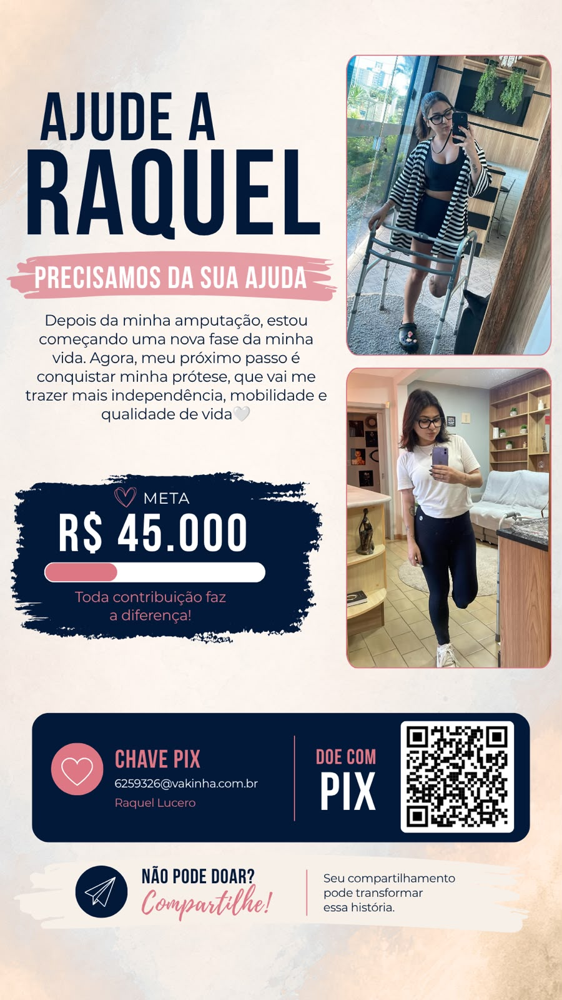

Fé que vira
diversão.
Reúna a galera, escolha um jogo e crie memórias que edificam.
CAMPANHA SOLIDÁRIA
Juntos pelo
próximo passo.
Depois de uma amputação, Raquel Lucero está começando uma nova fase. Agora, o objetivo é conquistar uma prótese que trará mais independência, mobilidade e qualidade de vida.
Toda contribuição faz diferença. Se não puder doar, compartilhe esta história.
Ajudar na Vakinha
ADIVINHAÇÃO
Quem Sou Eu?
Como jogar
PREPARE-SE
5O jogo vai começar UMA CORRENTE DE AMORAjude a Raquel a conquistar sua próteseConhecerQUEM SOU EU?
ACERTOS0
TEMPO3:00
FIM DE JOGO
Mandou
muito bem!
0PONTOS